library(gsheet) # Importação dos dados na nuvem
library(dplyr) # Manipulação
library(readxl) # Improtação de dados no computador
#library(vegan) # Gráfico de HeatMap
library(ggthemes) #Tema de fundo do gráfico
library(tidyverse) # Conjunto de pacotes
library(cowplot) # theme
library(writexl) #Exportação de dados
library(ggalluvial)
library(ggplot2) # Gráficos
library(lme4) # GLM
library(glmmTMB) #GLMM
library(rnaturalearth)
library(ggplot2)
library(ggridges)
library(performance)
library(DHARMa)
library(PresenceAbsence)
library(caret)
library(lmtest)Packages
#Data importation
population = read.csv("data/descriptive.csv")
#Total abundance in falcon tube (20 mL)
population$quantity = 6.66*population$quantity
population$quantity =as.integer(population$quantity)
population$quantity =as.numeric(population$quantity)#Incidence
By samples
#Incidence by samples
population_incidence_samples = population %>%
filter(quantity>0) %>%
group_by(genus,samples) %>%
summarise(
n = n()
)
count(population_incidence_samples)By municipality
#Incidence of genus by city
population_incidence_city = population %>%
group_by(genus,city) %>%
summarise(
n = n()
)
count(population_incidence_city)By region
#Incidence by region
population_incidence_region = population %>%
filter(!region %in% c("North","Northwest")) %>%
group_by(genus,region) %>%
summarise(
n = n()
)
population_incidence_region %>%
filter(region == "East") %>%
summarise()count(population_incidence_region)By tillage
#Incidece by tillage
population_incidence_tillage= population %>%
group_by(genus,tillage) %>%
summarise(
n = n()
)
count(population_incidence_tillage)population_incidence_tillage %>%
group_by(tillage) %>%
summarise(
n = n()
)number_tillage = population %>%
#filter(!region %in% c("North","Northwest")) %>%
group_by(samples,tillage) %>%
summarise(
n = sum(quantity)
)
unique(number_tillage$tillage)[1] "Minimum" "No-till" "Conventional"number_tillage %>%
filter(tillage == "No-till")number_tillage %>%
filter(tillage == "Minimum")number_tillage %>%
filter(tillage == "Conventional")By cropping
#Incidece by cropping
population_incidence_cropping= population %>%
group_by(genus,cropping) %>%
summarise(
n = n()
)
count(population_incidence_cropping)population_incidence_cropping %>%
group_by(cropping) %>%
summarise(
n = n()
)number_cropping = population %>%
group_by(samples,cropping) %>%
summarise(
n = sum(quantity)
)
unique(number_cropping$cropping)[1] "Corn_soybean" "Corn_others" number_cropping %>%
filter(cropping == "Corn_soybean")number_cropping %>%
filter(cropping == "Corn_others")By soil
#Incidece by soil
population_incidence_soil= population %>%
filter(soil %in% c("Argissolo","Latossolo","Cambissolo")) %>%
group_by(genus,soil) %>%
summarise(
n = n()
)
count(population_incidence_soil)camb = population_incidence_soil %>%
filter(soil == "Cambissolo")
cambarg =population_incidence_soil %>%
filter(soil == "Argissolo")
arglat =population_incidence_soil %>%
filter(soil == "Latossolo")
latsoil_diversity = rbind(camb,arg,lat)
write_xlsx(soil_diversity, "data/soil_diversity.xlsx")nematode_incidence = count(population_incidence_soil)
nematode_incidencenumber_soil = population %>%
group_by(samples,soil) %>%
summarise(
n = sum(quantity)
)
unique(number_soil$soil)[1] "Latossolo" "Cambissolo" "Argissolo" "Chernossolo" "Gleissolo"
[6] "Neossolo" number_soil %>%
filter(soil == "Argissolo")number_soil %>%
filter(soil == "Cambissolo")number_soil %>%
filter(soil == "Chernossolo")number_soil %>%
filter(soil == "Gleissolo")number_soil %>%
filter(soil == "Latossolo")number_soil %>%
filter(soil == "Neossolo")Diversity
# Diversidade por região de solo
population_incidence_soil %>%
group_by(soil) %>%
summarise(
n = n()
)nematode_incidence %>%
ggplot(aes(reorder(genus,+n),n))+
geom_bar(stat = "identity", position = "dodge", fill = "steelblue")+
coord_flip()+
theme_minimal()+
labs(x = "Morphological group",
y = "Incidence")+
theme(text = element_text(size = 16))
#ggsave("density_genus_region.png",dpi = 600, bg = "white", width = 14, height = 12)Frequency
By group
frequency = population %>%
filter(quantity > 0) %>%
group_by(genus,samples) %>%
summarise(
quantity = sum(quantity)
) %>%
group_by(genus) %>%
summarise(
n = n(),
frequency = n/364
)
frequencyBy soil
#Argissolo
frequency_soil_argissolo = population %>%
filter(Sampling == "Soil") %>%
filter(soil == "Argissolo") %>%
group_by(samples) %>%
summarise(
n = n()
)
count(frequency_soil_argissolo) #24frequency_argissolo = population %>%
filter(quantity > 0) %>%
filter(soil == "Argissolo") %>%
group_by(genus,samples) %>%
summarise(
quantity = sum(quantity)
) %>%
group_by(genus) %>%
summarise(
n = n(),
frequency = (n/24)*100
)
frequency_argissolo$soil = replicate(14,"Argissolo")
#Latossolo
frequency_soil_latossolo = population %>%
filter(Sampling == "Soil") %>%
filter(soil == "Latossolo") %>%
group_by(samples) %>%
summarise(
n = n()
)
count(frequency_soil_latossolo) #223frequency_latossolo = population %>%
filter(quantity > 0) %>%
filter(soil == "Latossolo") %>%
group_by(genus,samples) %>%
summarise(
quantity = sum(quantity)
) %>%
group_by(genus) %>%
summarise(
n = n(),
frequency = (n/223)*100
)
frequency_latossolo$soil = replicate(21,"Latossolo")
#Cambissolo
frequency_soil_cambissolo = population %>%
filter(Sampling == "Soil") %>%
filter(soil == "Cambissolo") %>%
group_by(samples) %>%
summarise(
n = n()
)
count(frequency_soil_cambissolo) #73frequency_cambissolo = population %>%
filter(quantity > 0) %>%
filter(soil == "Cambissolo") %>%
group_by(genus,samples) %>%
summarise(
quantity = sum(quantity)
) %>%
group_by(genus) %>%
summarise(
n = n(),
frequency = (n/73)*100
)
frequency_cambissolo$soil = replicate(20,"Cambissolo")
soil_frequency = rbind(frequency_argissolo,frequency_latossolo,frequency_cambissolo)
soil_frequency %>%
filter(genus %in% c("Helicotylenchus","Rotylenchulus","Pratylenchus","Aphelenchoides",
"Aphelenchus", "Criconematidae")) %>%
ggplot(aes(reorder(genus,+frequency), frequency))+
geom_bar(stat = "identity", position = "dodge", fill = "steelblue")+
theme_minimal()+
labs(x = "Grupos morfológicos",
y = "Densidade média (nematoides/100 cm³)")+
theme(text = element_text(size = 20))+
facet_wrap(~soil)+
coord_flip()
Density
By region
#region
region = population %>%
#filter(Sampling == "Root") %>%
filter(quantity > 0) %>%
group_by(genus,region) %>%
summarise(
quantity = sum(quantity))
population %>%
#filter(Sampling == "Root") %>%
filter(quantity > 0) %>%
group_by(genus,region) %>%
summarise(
quantity = sum(quantity)) %>%
group_by(genus) %>%
summarise(
n = n()
) region[region$genus== "Helicotylenchus",c("presence_region")] <- 6
region[region$genus== "Pratylenchus",c("presence_region")] <- 6
region[region$genus== "Meloidogyne",c("presence_region")] <- 5
region[region$genus== "Aphelenchus",c("presence_region")] <- 6
region[region$genus== "Aphelenchoides",c("presence_region")] <- 5
region[region$genus== "Criconematidae",c("presence_region")] <- 6
region[region$genus== "Rotylenchus",c("presence_region")] <- 5
region[region$genus== "Rotylenchulus",c("presence_region")] <- 4
region[region$genus== "Tylenchidae",c("presence_region")] <- 6
region[region$genus== "Anguinidae",c("presence_region")] <- 6
region[region$genus== "Tylenchorhynchus",c("presence_region")] <- 5
region[region$genus== "Trichodorus",c("presence_region")] <- 4
region[region$genus== "Heterodera",c("presence_region")] <- 3
region[region$genus== "Paratrichodorus",c("presence_region")] <- 3
region[region$genus=="Hemicycliophora",c("presence_region")] <- 4
region[region$genus== "Xiphinema",c("presence_region")] <- 1
region[region$genus== "Paratylenchus",c("presence_region")] <- 1
region[region$genus== "Merlinius",c("presence_region")] <- 1
region[region$genus=="Scutellonema",c("presence_region")] <- 4
region[region$genus== "Longidorus",c("presence_region")] <- 2
region[region$genus== "Hoplolaimus",c("presence_region")] <- 2
region_mean = region %>%
filter(quantity > 0) %>%
group_by(genus,region) %>%
summarise(
mean_density = quantity/presence_region)
region_mean region_density = region_mean %>%
#filter(!region %in% c("North","Northwest")) %>%
filter(genus %in% c("Aphelenchus","Aphelenchoides","Criconematidae","Rotylenchulus",
"Pratylenchus","Helicotylenchus")) %>%
ggplot(aes(reorder(genus,+mean_density), mean_density))+
geom_bar(stat = "identity", position = "dodge", fill = "black")+
scale_y_continuous(breaks = seq(0, 3000, by = 500)) +
ggthemes::theme_few()+
labs( x = "Morphological group",
y = "Mean density (nematodes/100 cm³)")+
theme(text = element_text(size = 14, face = "bold"),
axis.text.x = element_text(angle = 45,vjust = 1, hjust = 1))+
facet_wrap(~region)
ggsave("fig/mean_density_region.png", bg = "white", dpi = 600, width = 14, height = 10)
region_density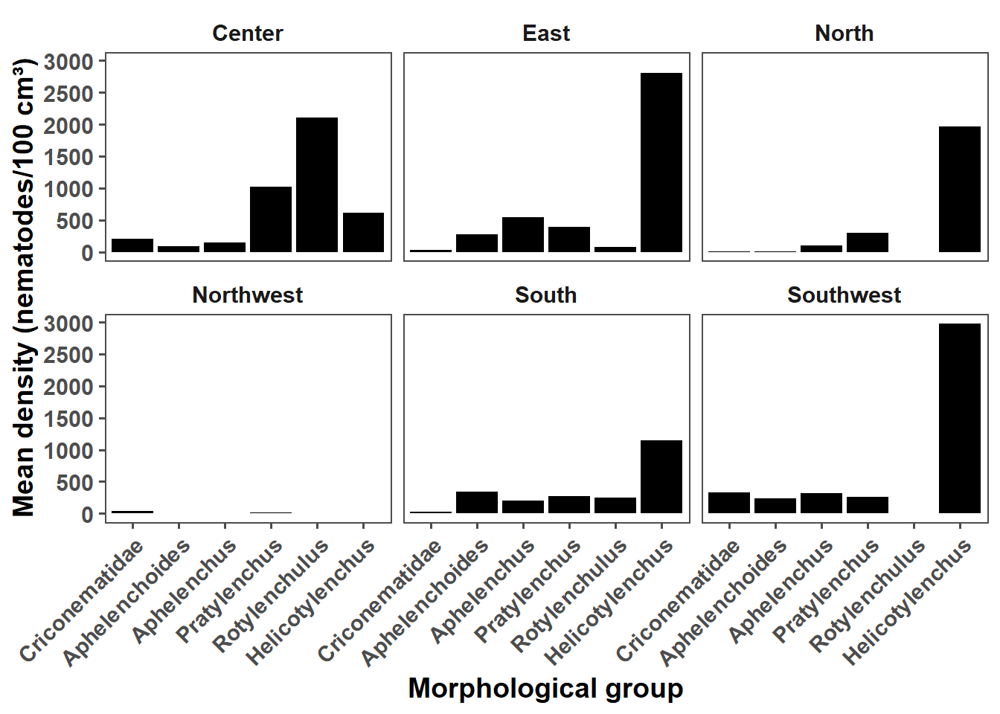
# Supplementary
region_mean %>%
#filter(!region %in% c("North","Northwest")) %>%
filter(!genus %in% c("Aphelenchus","Aphelenchoides","Criconematidae","Rotylenchulus",
"Pratylenchus","Helicotylenchus")) %>%
ggplot(aes(reorder(genus,+mean_density), mean_density))+
geom_bar(stat = "identity", position = "dodge", fill = "steelblue")+
theme_minimal()+
labs( x = "Morphological groups",
y = "Mean density (nematoides/cm³)")+
theme(text = element_text(size = 20))+
facet_wrap(~region)+
coord_flip()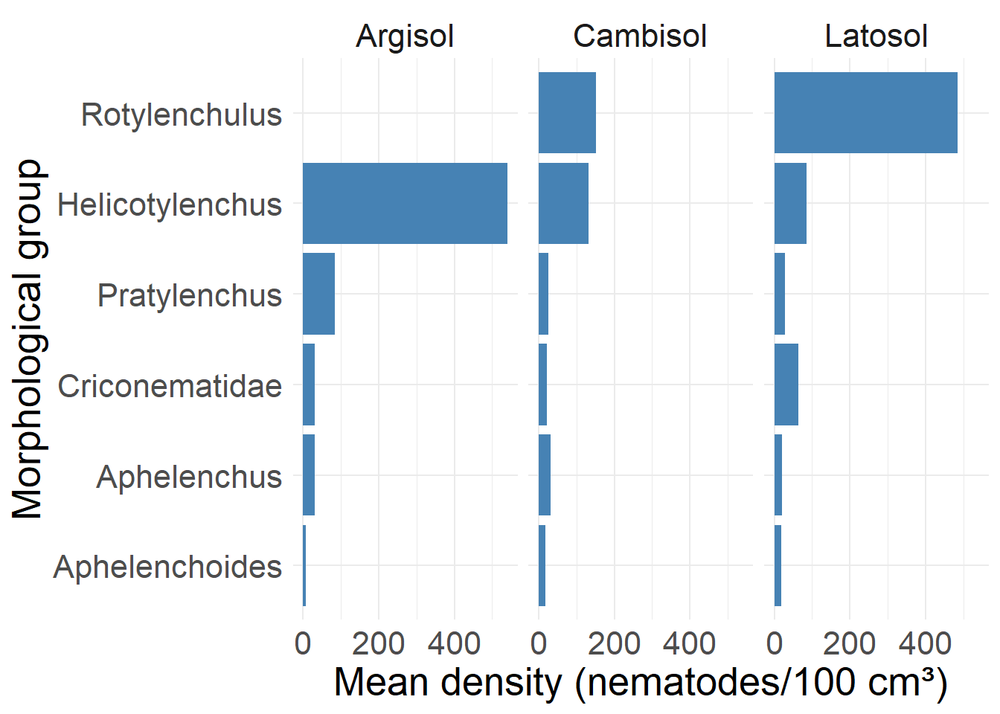
#ggsave("mean_density_region_supplementary.png", bg = "white", dpi = 600, width = 14, height = 10)
region_meanBy municipality
#city
city = population %>%
#filter(Sampling == "Root") %>%
filter(quantity > 0) %>%
group_by(genus,city) %>%
summarise(
quantity = sum(quantity)
)
city[city$genus== "Helicotylenchus",c("presence_city")] <- 26
city[city$genus== "Pratylenchus",c("presence_city")] <- 25
city[city$genus== "Meloidogyne",c("presence_city")] <- 16
city[city$genus== "Aphelenchus",c("presence_city")] <- 26
city[city$genus== "Aphelenchoides",c("presence_city")] <- 25
city[city$genus== "Criconematidae",c("presence_city")] <- 21
city[city$genus== "Rotylenchus",c("presence_city")] <- 19
city[city$genus== "Rotylenchulus",c("presence_city")] <- 6
city[city$genus== "Tylenchidae",c("presence_city")] <- 22
city[city$genus== "Anguinidae",c("presence_city")] <- 24
city[city$genus== "Tylenchorhynchus",c("presence_city")] <- 17
city[city$genus== "Trichodorus",c("presence_city")] <- 7
city[city$genus== "Heterodera",c("presence_city")] <- 13
city[city$genus== "Paratrichodorus",c("presence_city")] <- 7
city[city$genus== "Hemicycliophora",c("presence_city")] <- 9
city[city$genus== "Xiphinema",c("presence_city")] <- 2
city[city$genus== "Paratylenchus",c("presence_city")] <- 2
city[city$genus== "Merlinius",c("presence_city")] <- 1
city[city$genus=="Scutellonema",c("presence_city")] <- 7
city[city$genus== "Longidorus",c("presence_city")] <- 2
city[city$genus== "Hoplolaimus",c("presence_city")] <- 3
city_mean = city %>%
filter(quantity > 0) %>%
group_by(genus,city) %>%
summarise(
mean_density = quantity/presence_city)
city_meancity_mean %>%
filter(!genus %in% c("Aphelenchus","Aphelenchoides","Criconematidae","Rotylenchulus",
"Pratylenchus","Helicotylenchus")) %>%
ggplot(aes(city,mean_density)) +
geom_bar(stat = "identity", position = "dodge", fill = "#041e39")+
facet_wrap(~genus, ncol = 3)+
ggthemes::theme_few()+
#scale_y_continuous(breaks = seq(0, 600, by = 100)) +
labs(x = "Municipality", y = "Mean density (nematodes/100 cm³)") +
theme(text = element_text(size = 12),
axis.text.x = element_text(angle = 45, vjust = 1, hjust =1),
axis.title = element_text(face = "bold"),
strip.text = element_text(face = "italic"))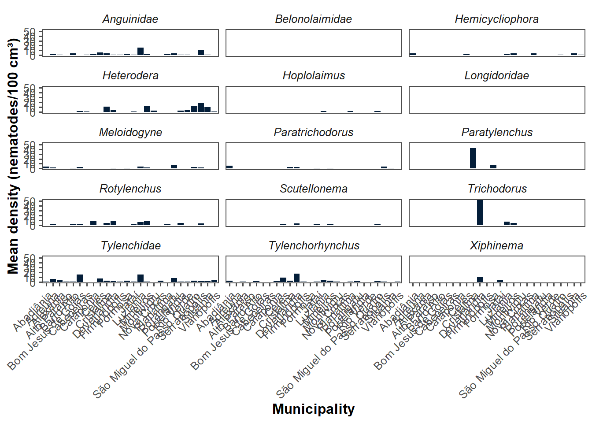
ggsave("fig/mean_density_city.png", dpi = 600, bg = "white", width = 10, height = 8)By sample
#Mean density
mean_density = population %>%
group_by(genus,city) %>%
filter(quantity > 0) %>%
summarise(
density = sum(quantity))
#Samples
mean_density[mean_density$genus== "Helicotylenchus",c("presence")] <- 317
mean_density[mean_density$genus== "Pratylenchus",c("presence")] <- 237
mean_density[mean_density$genus== "Meloidogyne",c("presence")] <- 43
mean_density[mean_density$genus== "Aphelenchus",c("presence")] <- 288
mean_density[mean_density$genus== "Aphelenchoides",c("presence")] <- 211
mean_density[mean_density$genus== "Criconematidae",c("presence")] <- 78
mean_density[mean_density$genus== "Rotylenchus",c("presence")] <- 93
mean_density[mean_density$genus== "Rotylenchulus",c("presence")] <- 22
mean_density[mean_density$genus== "Tylenchidae",c("presence")] <- 125
mean_density[mean_density$genus== "Anguinidae",c("presence")] <- 97
mean_density[mean_density$genus== "Tylenchorhynchus",c("presence")] <- 46
mean_density[mean_density$genus== "Trichodorus",c("presence")] <- 17
mean_density[mean_density$genus== "Heterodera",c("presence")] <- 58
mean_density[mean_density$genus== "Paratrichodorus",c("presence")] <- 15
mean_density[mean_density$genus== "Hemicycliophora",c("presence")] <- 19
mean_density[mean_density$genus== "Xiphinema",c("presence")] <- 2
mean_density[mean_density$genus== "Paratylenchus",c("presence")] <- 3
mean_density[mean_density$genus== "Merlinius",c("presence")] <- 1
mean_density[mean_density$genus== "Scutellonema",c("presence")] <- 11
mean_density[mean_density$genus== "Longidorus",c("presence")] <- 4
mean_density[mean_density$genus== "Hoplolaimus",c("presence")] <- 3
mean_density = mean_density %>%
group_by(genus,city) %>%
filter(density > 0) %>%
summarise(
mean_density = density/presence)
mean_densityBy soil
soil_density = population %>%
dplyr::filter(soil %in% c("Latossolo","Argissolo","Cambissolo")) %>%
dplyr::filter(quantity > 0) %>%
dplyr::group_by(genus,soil) %>%
dplyr::reframe(
n = n(),
quantity2 = sum(quantity),
sd = sd(quantity)) %>%
dplyr::group_by(genus,soil) %>%
dplyr::reframe(
mean_density = quantity2/n,
sd = sd/n
)
soil_density[soil_density$soil== "Latossolo",c("soil_goias")] <- "Latosol"
soil_density[soil_density$soil== "Cambissolo",c("soil_goias")] <- "Cambisol"
soil_density[soil_density$soil== "Argissolo",c("soil_goias")] <- "Argisol"
# graphic for more expressive
soil_graphic = soil_density %>%
filter(genus %in% c("Helicotylenchus","Rotylenchulus","Pratylenchus","Aphelenchoides",
"Aphelenchus", "Criconematidae")) %>%
ggplot(aes(reorder(genus,+mean_density), mean_density,
group = soil_goias, fill = soil_goias))+
geom_bar(stat = "identity", position = "dodge")+
scale_y_continuous(breaks = seq(0, 600, by = 100)) +
scale_fill_viridis_d(option = "E")+
ggthemes::theme_few()+
labs(x = "",
y = "",
fill = "Soil")+
theme(text = element_text(size = 14),
axis.title = element_text(face = "bold"),
#axis.text.y = element_text(face = "italic"),
axis.text.x = element_blank()) #angle = 45, vjust = 1, hjust = 1,face = "italic"
ggsave("fig/soil_mean_density.png", dpi = 600, bg = "white", width = 10, height = 6)soil_density %>%
filter(genus %in% c("Helicotylenchus","Rotylenchulus","Pratylenchus","Aphelenchoides",
"Aphelenchus", "Criconematidae"))count(soil_density)By cropping
#library(ggridges)
cropping_density = population %>%
filter(quantity >0) %>%
group_by(genus,cropping) %>%
summarise(
n = n(),
quantity = sum(quantity)) %>%
group_by(genus,cropping) %>%
summarise(
mean_density = quantity/n
)
count(cropping_density)cropping_density[cropping_density$cropping== "Corn_soybean",c("cropping_practice")] <- "Succession"
cropping_density[cropping_density$cropping== "Corn_others",c("cropping_practice")] <- "Rotation"
corn_soybean = cropping_density %>%
filter(genus %in% c("Helicotylenchus","Rotylenchulus","Pratylenchus","Aphelenchoides",
"Aphelenchus", "Criconematidae")) %>%
#filter(cropping_practice == "Succession") %>%
ggplot(aes(reorder(genus,+mean_density) , y = mean_density,
group = cropping_practice, fill = cropping_practice)) +
geom_bar(stat = "identity", position = "dodge")+
ggthemes::theme_few()+
scale_fill_viridis_d(option = "E")+
scale_y_continuous(breaks = seq(0, 500, by = 100)) +
labs(x = "",
y = "Mean density (nematodes/100 cm³)",
fill = "Cropping")+
theme(text = element_text(size = 14),
axis.title = element_text(face = "bold"),
#axis.text.y = element_text(face = "italic"),
axis.text.x = element_blank()) #
corn_others = cropping_density %>%
#filter(cropping_practice == "Rotation") %>%
ggplot(aes(reorder(genus,+mean_density) , y = mean_density, group = genus)) +
geom_bar(stat = "identity", position = "dodge", fill = "steelblue")+
ggthemes::theme_few()+
scale_y_continuous(limits = c(0, 500),breaks = seq(0, 500, by = 50))+
labs(x = "",
y = "Mean density (nematodes/100 cm³)")+
theme(text = element_text(size = 14),
axis.title = element_text(face = "bold"),
axis.text.y = element_text(face = "italic"),
axis.text.x = element_text(angle = 45, vjust = 1, hjust = 1))+
facet_wrap(~cropping_practice)+
coord_flip()
plot_grid(corn_soybean,corn_others, label_size = 32)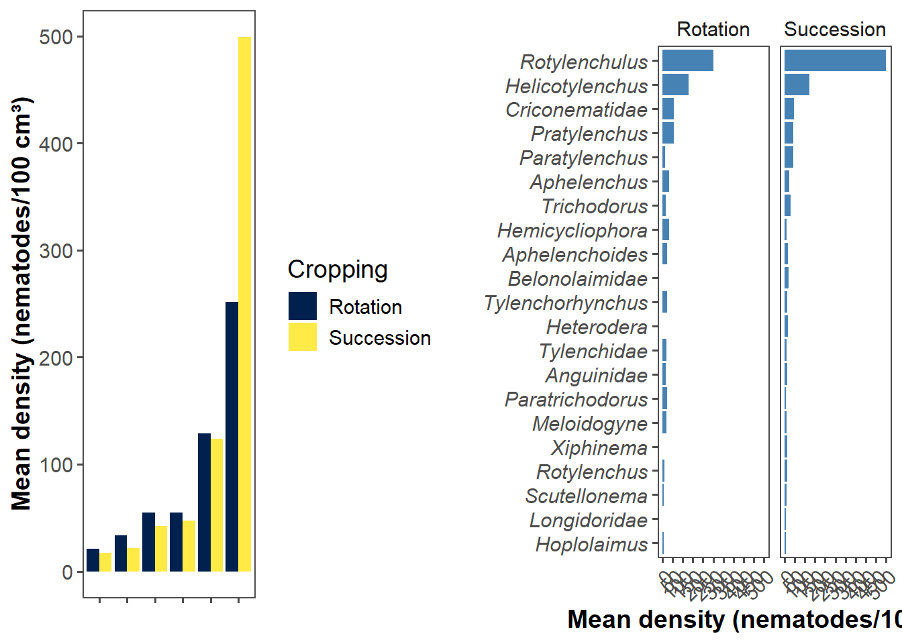
ggsave("fig/cropping_density_histogram.png",
dpi = 600, width = 10, height = 6, bg = "white")cropping_density %>%
# filter(genus %in% c("Hoplolaimus","Xiphinema","Longidorus","Paratrichodorus","Trichodorus",
# "Rotylenchus","Angunidae","Scutellonema","Hemicycliophora")) %>%
ggplot(aes(genus,mean_density))+
geom_bar(stat = "identity", position = "dodge")+
facet_wrap(~cropping)+
coord_flip()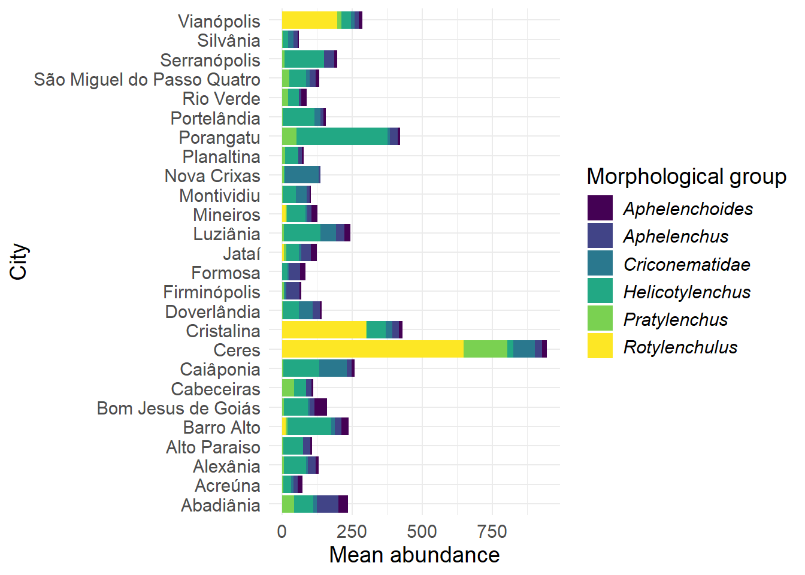
By tillage
tillage_density = population %>%
filter(quantity >0) %>%
group_by(genus,tillage) %>%
summarise(
n = n(),
quantity = sum(quantity)) %>%
group_by(genus,tillage) %>%
summarise(
mean_density = quantity/n
)
count(tillage_density)tillage_graphic = tillage_density %>%
filter(genus %in% c("Aphelenchus","Aphelenchoides","Criconematidae","Rotylenchulus",
"Pratylenchus","Helicotylenchus")) %>%
ggplot(aes(reorder(genus,+mean_density), mean_density,
group = tillage, fill = tillage))+
geom_bar(stat = "identity", position = "dodge")+
ggthemes::theme_few()+
scale_fill_viridis_d(option = "E")+
scale_y_continuous(limits = c(0, 500),,breaks = seq(0, 500, by = 100))+
labs(x = "Morphological group",
y = "",
fill = "Tillage")+
theme(text = element_text(size = 14),
axis.title = element_text(face = "bold"),
#axis.text.y = element_text(face = "italic"),
axis.text.x = element_text(angle = 45, vjust = 1, hjust = 1,face = "italic"))
ggsave("fig/tillage_density.png", bg = "white", dpi = 600, width = 10, height = 6)
tillage_density %>%
filter(!genus %in% c("Aphelenchus","Aphelenchus","Aphelenchoides","Criconematidae",
"Helicotylenchus","Rotylenchulus")) %>%
group_by(tillage) %>%
summarise(
mean = mean(mean_density),
sd = sd(mean_density))Altitude
population <- population %>%
dplyr::mutate(altitute = case_when(altitute >= 0 ~ altitute,
altitute == NA_character_ ~ 0 )) %>%
dplyr::mutate(altitude_range = case_when(
altitute <= 400 ~ "280 to 400",
altitute <= 600 ~ "401 to 600",
altitute <= 800 ~ "601 to 800",
altitute <= 1000 ~ "801 to 1000",
altitute > 1000 ~"Above 1001"
))
altitude_density = population %>%
filter(quantity >0) %>%
group_by(genus,altitude_range) %>%
summarise(
n = n(),
quantity = sum(quantity)) %>%
group_by(genus,altitude_range) %>%
summarise(
mean_density = quantity/n
)
altitude_densityaltitude_graphic = altitude_density %>%
filter(genus %in% c("Aphelenchus","Aphelenchoides","Criconematidae","Rotylenchulus",
"Pratylenchus","Helicotylenchus")) %>%
ggplot(aes(altitude_range, mean_density,
group = altitude_range))+
geom_bar(stat = "identity", position = "dodge", fill = "#041e39")+
ggthemes::theme_few()+
scale_fill_viridis_d(option = "E")+
scale_y_continuous(limits = c(0, 950),breaks = seq(0, 950, by = 150))+
labs(x = "Altitude (m)",
y = "Mean density (nematodes/100 cm³)",
fill = "Altitude")+
theme(text = element_text(size = 12),
axis.title = element_text(face = "bold"),
#axis.text.y = element_text(face = "italic"),
axis.text.x = element_text(angle = 45, vjust = 1, hjust = 1),
strip.text = element_text(face = "italic"))+
facet_wrap(~genus)
altitude_graphic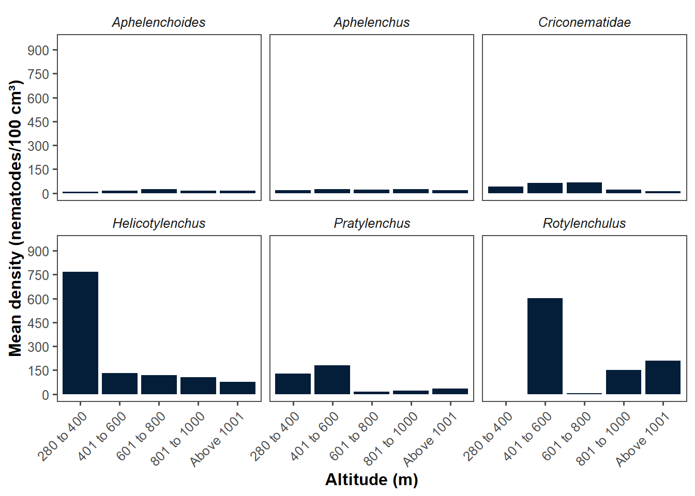
Joining
library(patchwork)
(soil_graphic/corn_soybean/tillage_graphic)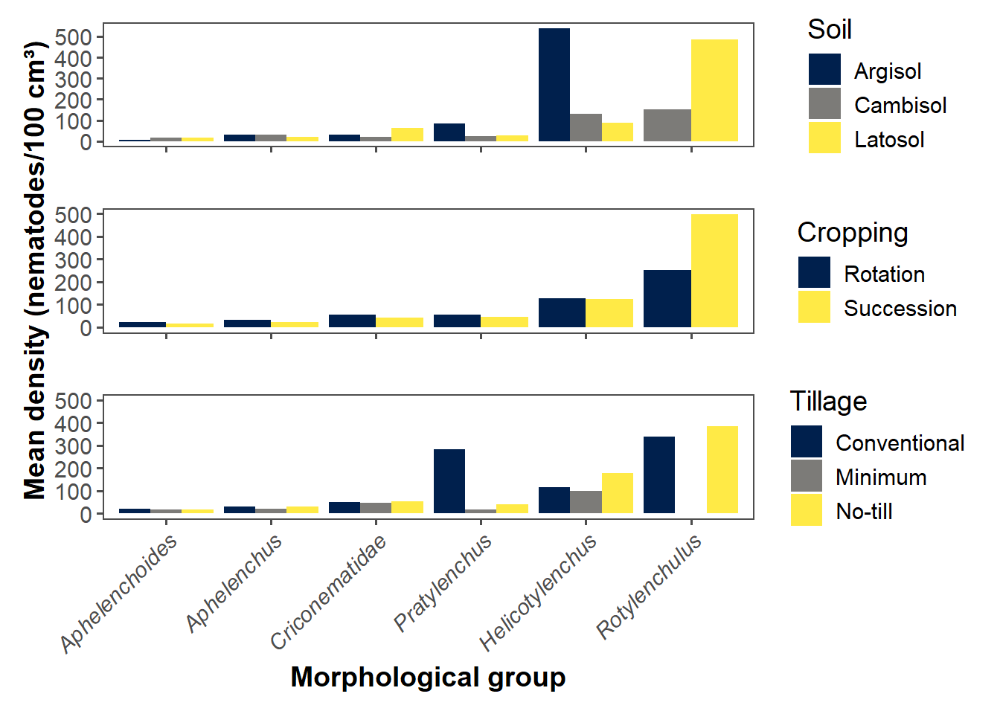
ggsave("fig/soil_tillage_cropping-density.png", dpi = 600,
width = 10, height = 8)altitude_graphic
ggsave("fig/altitude.png", dpi = 600,
width = 8, height = 6)Abundance (Supplementary)
By group
#Samples
mean_abundance = population %>%
group_by(genus) %>%
filter(quantity > 0) %>%
summarise(
density = mean(quantity),
sd = sd(quantity)
)
mean_abundanceBy municipality
#City
city_abundance = population %>%
filter(genus %in% c("Aphelenchus","Aphelenchoides","Criconematidae",
"Helicotylenchus","Pratylenchus","Rotylenchulus")) %>%
group_by(genus,city) %>%
summarise(
mean = mean(quantity)
)
city_abundance city_abundance2 = population %>%
filter(genus %in% c("Aphelenchus","Aphelenchoides","Criconematidae",
"Helicotylenchus","Pratylenchus","Rotylenchulus")) %>%
group_by(genus) %>%
summarise(
mean = mean(quantity),
sd = sd(quantity),
n = n(), # Conta o número de observações
se = sd / sqrt(n) # Calcula o erro padrão
)#Máximo especifico
city_abundance %>%
filter(genus == "Criconematidae") max_nematodae = population %>%
filter(genus == "Criconematidae")
max(max_nematodae$quantity)[1] 679 max_nematodae %>%
filter(quantity > 600)#Minimo
min_abundance = population %>%
group_by(genus,city) %>%
summarise(
mean = mean(quantity)
)
min_abundance %>%
group_by(genus) %>%
summarise(
min = min(mean)
)library(ggplot2)
library(dplyr)
ggplot(city_abundance,aes(genus,mean)) +
geom_boxplot(color = "black", size = 1)+
geom_jitter(width = 0.1, size = 2, alpha = 0.5, color = "gray") +
#geom_pointrange(data = city_abundance2, aes(x = fct_reorder(genus, mean), y = mean,
# ymin = mean - se, ymax = mean + se),
# color = "black", size = 0.5) +
scale_y_continuous(breaks = seq(0, 650, by = 50)) +
ggthemes::theme_few()+
labs(x = "Morphological groups", y = "Mean abundance (nematodes per city)") +
theme(text = element_text(size = 16),
axis.text.x = element_text(face = "italic",angle = 45, vjust = 1, hjust =1),
axis.title = element_text(face = "bold"))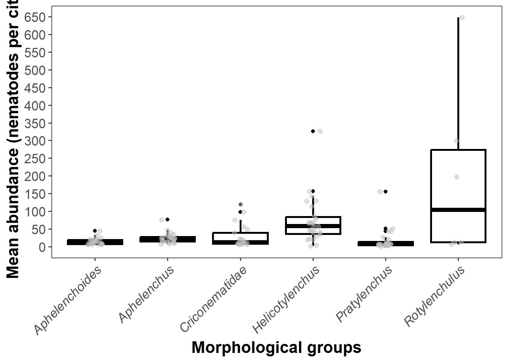
city_abundance %>%
filter(genus %in% c("Aphelenchus","Aphelenchoides","Criconematidae","Rotylenchulus",
"Pratylenchus","Helicotylenchus")) %>%
ggplot(aes(city,mean)) +
geom_bar(stat = "identity", position = "dodge", fill = "#041e39")+
facet_wrap(~genus)+
ggthemes::theme_few()+
scale_y_continuous(breaks = seq(0, 600, by = 100)) +
labs(x = "Municipality", y = "Mean abundance (cm³)") +
theme(text = element_text(size = 12),
axis.text.x = element_text(angle = 45, vjust = 1, hjust =1),
axis.title = element_text(face = "bold"),
strip.text = element_text(face = "italic"))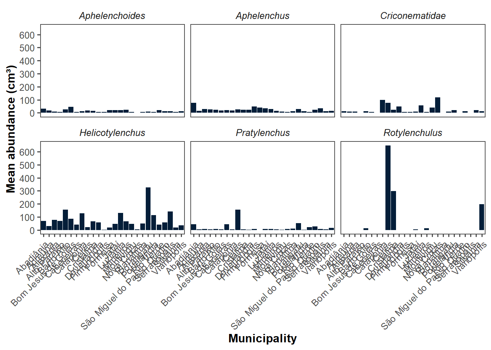
ggsave("fig/abundance_city2.png", dpi = 600, bg = "white", width = 10, height = 6) ggsave("fig/abundance_city.png", dpi = 600, bg = "white", width = 10, height = 6)By city and morphological group
#City and morphological group specific (Helicotylenchus,Rotylenchulus and Pratylenchus) in soil
helicotylenchus_city_abundance= population %>%
filter(quantity > 0) %>%
filter(Sampling == "Soil") %>%
group_by(city) %>%
filter(genus %in% c("Helicotylenchus")) %>%
summarise(
n = n(),
mean = mean(quantity)
)
helicotylenchus_city_abundancerotylenchulus_city_abundance = population %>%
filter(quantity > 0) %>%
filter(Sampling == "Soil") %>%
group_by(city) %>%
filter(genus %in% c("Rotylenchulus")) %>%
summarise(
n = n(),
mean = mean(quantity)
)
rotylenchulus_city_abundancepratylenchus_city_abundance = population %>%
filter(quantity > 0) %>%
filter(Sampling == "Soil") %>%
group_by(city) %>%
filter(genus %in% c("Pratylenchus")) %>%
summarise(
n = n(),
mean = mean(quantity)
)
pratylenchus_city_abundance#City and morphological without Rotylenchulus and Pratylenchusin soil
group_city_abundance_nonexpressive = population %>%
filter(quantity > 0) %>%
group_by(genus,city) %>%
filter(Sampling == "Soil") %>%
filter(!genus %in% c("Helicotylenchus","Rotylenchulus")) %>%
summarise(
n = n(),
mean = mean(quantity)
)
group_city_abundance_nonexpressivemax(group_city_abundance_nonexpressive$mean)[1] 119min(group_city_abundance_nonexpressive$mean)[1] 6#Root samples
root_city_abundance= population %>%
filter(quantity > 0) %>%
filter(Sampling == "Root") %>%
group_by(city) %>%
summarise(
n = n(),
mean = mean(quantity)
)
root_city_abundanceBy tillage
#Tillage mean
tillage_mean = population %>%
filter(quantity>0) %>%
group_by(tillage) %>%
summarise(
mean = mean(quantity)
)
#Tillage and genus mean
tillage_density = population %>%
filter(quantity >0) %>%
group_by(genus,tillage) %>%
summarise(
n = n(),
mean = mean(quantity),
median = median(quantity),
sd = sd(quantity)
)
tilage_density_nematode = tillage_density %>%
filter(genus %in% c("Helicotylenchus","Rotylenchulus","Pratylenchus","Aphelenchoides",
"Aphelenchus", "Criconematidae")) %>%
ggplot(aes(reorder(tillage,+mean),mean, group = tillage))+
geom_bar(stat = "identity", position = "dodge", fill = "steelblue")+
facet_grid(~genus)+
theme_bw()+
theme(text = element_text(size = 20),
axis.text.x = element_text(angle = 45, hjust = 1),
legend.background = element_rect(fill = "white",colour = "white"))+
labs(x = "Tillage practice",
y = "Mean abundance")
ggsave("fig/tillage_abundance.png", dpi = 600, width = 26, height = 12, bg = "white")# Supplementary
tillage_density %>%
filter(!genus %in% c("Helicotylenchus","Rotylenchulus","Pratylenchus","Aphelenchoides",
"Aphelenchus", "Criconematidae","Merlinius","Hoplolaimus")) %>%
ggplot(aes(reorder(tillage,+mean),mean, group = tillage))+
geom_bar(stat = "identity", position = "dodge", fill = "steelblue")+
facet_grid(~genus)+
theme_bw()+
theme(text = element_text(size = 20),
axis.text.x = element_text(angle = 45, hjust = 1),
legend.background = element_rect(fill = "white",colour = "white"))+
labs(x = "Tillage practice",
y = "Mean abundance")
ggsave("fig/tillage_supplementary.png", dpi = 600, width = 26, height = 12, bg = "white")Mapping
aphelenchus = mean_density %>%
filter(genus == "Aphelenchus") %>%
group_by(city) %>%
summarise(
quantity = mean(mean_density))
aphelenchus["genus"]= c("Aphelenchus","Aphelenchus","Aphelenchus","Aphelenchus","Aphelenchus",
"Aphelenchus","Aphelenchus","Aphelenchus","Aphelenchus","Aphelenchus",
"Aphelenchus","Aphelenchus","Aphelenchus","Aphelenchus","Aphelenchus",
"Aphelenchus","Aphelenchus","Aphelenchus","Aphelenchus","Aphelenchus",
"Aphelenchus","Aphelenchus","Aphelenchus","Aphelenchus","Aphelenchus",
"Aphelenchus")
aphelenchoides = mean_density %>%
filter(genus == "Aphelenchoides") %>%
group_by(city) %>%
summarise(
quantity = mean(mean_density))
aphelenchoides["genus"]= c("Aphelenchoides","Aphelenchoides","Aphelenchoides","Aphelenchoides",
"Aphelenchoides","Aphelenchoides","Aphelenchoides","Aphelenchoides",
"Aphelenchoides","Aphelenchoides","Aphelenchoides","Aphelenchoides",
"Aphelenchoides","Aphelenchoides","Aphelenchoides","Aphelenchoides",
"Aphelenchoides","Aphelenchoides","Aphelenchoides","Aphelenchoides",
"Aphelenchoides","Aphelenchoides","Aphelenchoides","Aphelenchoides",
"Aphelenchoides")
rotylenchulus = mean_density %>%
filter(genus == "Rotylenchulus") %>%
group_by(city) %>%
summarise(
quantity = mean(mean_density))
rotylenchulus["genus"]= c("Rotylenchulus","Rotylenchulus","Rotylenchulus","Rotylenchulus",
"Rotylenchulus","Rotylenchulus")
helicotylenchus = mean_density %>%
filter(genus == "Helicotylenchus") %>%
group_by(city) %>%
summarise(
quantity = mean(mean_density))
helicotylenchus["genus"]=c("Helicotylenchus","Helicotylenchus","Helicotylenchus",
"Helicotylenchus",
"Helicotylenchus","Helicotylenchus","Helicotylenchus","Helicotylenchus",
"Helicotylenchus","Helicotylenchus","Helicotylenchus","Helicotylenchus",
"Helicotylenchus","Helicotylenchus","Helicotylenchus","Helicotylenchus",
"Helicotylenchus","Helicotylenchus","Helicotylenchus","Helicotylenchus",
"Helicotylenchus","Helicotylenchus","Helicotylenchus","Helicotylenchus",
"Helicotylenchus","Helicotylenchus")
pratylenchus = mean_density %>%
filter(genus == "Pratylenchus") %>%
group_by(city) %>%
summarise(
quantity = mean(mean_density))
pratylenchus["genus"] = c("Pratylenchus","Pratylenchus","Pratylenchus","Pratylenchus",
"Pratylenchus","Pratylenchus","Pratylenchus","Pratylenchus",
"Pratylenchus","Pratylenchus","Pratylenchus","Pratylenchus",
"Pratylenchus","Pratylenchus","Pratylenchus","Pratylenchus",
"Pratylenchus","Pratylenchus","Pratylenchus","Pratylenchus",
"Pratylenchus","Pratylenchus","Pratylenchus","Pratylenchus",
"Pratylenchus")
criconematidae = mean_density %>%
filter(genus == "Criconematidae") %>%
group_by(city) %>%
summarise(
quantity = mean(mean_density))
criconematidae["genus"] = c("Criconematidae","Criconematidae","Criconematidae","Criconematidae",
"Criconematidae","Criconematidae","Criconematidae","Criconematidae",
"Criconematidae","Criconematidae","Criconematidae","Criconematidae",
"Criconematidae","Criconematidae","Criconematidae","Criconematidae",
"Criconematidae","Criconematidae","Criconematidae","Criconematidae",
"Criconematidae")
all_genus_map = rbind(aphelenchus,aphelenchoides,rotylenchulus,helicotylenchus,
pratylenchus,criconematidae)all_genus_map[all_genus_map$city== "Abadiânia",c("lat")] <- -16.1941
all_genus_map[all_genus_map$city== "Abadiânia",c("long")] <- -48.7001
all_genus_map[all_genus_map$city== "Acreúna",c("lat")] <- -17.3788
all_genus_map[all_genus_map$city== "Acreúna",c("long")] <- -50.3885
all_genus_map[all_genus_map$city== "Alexânia",c("lat")] <- -16.0783
all_genus_map[all_genus_map$city== "Alexânia",c("long")] <- -48.5097
all_genus_map[all_genus_map$city== "Alto Paraiso",c("lat")] <- -14.1336
all_genus_map[all_genus_map$city== "Alto Paraiso",c("long")] <- -47.5215
all_genus_map[all_genus_map$city== "Barro Alto",c("lat")] <- -14.9684
all_genus_map[all_genus_map$city== "Barro Alto",c("long")] <- -48.9201
all_genus_map[all_genus_map$city== "Bom Jesus de Goiás",c("lat")] <- -18.203
all_genus_map[all_genus_map$city== "Bom Jesus de Goiás",c("long")] <- -49.7341
all_genus_map[all_genus_map$city== "Cabeceiras",c("lat")] <- -15.7961
all_genus_map[all_genus_map$city== "Cabeceiras",c("long")] <- -46.927
all_genus_map[all_genus_map$city== "Caiâponia",c("lat")] <- -16.9539
all_genus_map[all_genus_map$city== "Caiâponia",c("long")] <- -51.8159
all_genus_map[all_genus_map$city== "Ceres",c("lat")] <- -15.3136
all_genus_map[all_genus_map$city== "Ceres",c("long")] <- -49.6033
all_genus_map[all_genus_map$city== "Cristalina",c("lat")] <- -16.7679
all_genus_map[all_genus_map$city== "Cristalina",c("long")] <- -47.6131
all_genus_map[all_genus_map$city== "Doverlândia",c("lat")] <- -16.6987
all_genus_map[all_genus_map$city== "Doverlândia",c("long")] <- -52.3189
all_genus_map[all_genus_map$city== "Firminópolis",c("lat")] <- -16.5825
all_genus_map[all_genus_map$city== "Firminópolis",c("long")] <- -50.3024
all_genus_map[all_genus_map$city== "Formosa",c("lat")] <- -15.537
all_genus_map[all_genus_map$city== "Formosa",c("long")] <- -47.3357
all_genus_map[all_genus_map$city== "Jataí",c("lat")] <- -17.8759
all_genus_map[all_genus_map$city== "Jataí",c("long")] <- -51.7214
all_genus_map[all_genus_map$city== "Luziânia",c("lat")] <- -16.2345
all_genus_map[all_genus_map$city== "Luziânia",c("long")] <- -47.9167
all_genus_map[all_genus_map$city== "Mineiros",c("lat")] <- -17.5787
all_genus_map[all_genus_map$city== "Mineiros",c("long")] <- -52.5424
all_genus_map[all_genus_map$city== "Montividiu",c("lat")] <- -17.4446
all_genus_map[all_genus_map$city== "Montividiu",c("long")] <- -51.1737
all_genus_map[all_genus_map$city== "Nova Crixas",c("lat")] <- -14.1048
all_genus_map[all_genus_map$city== "Nova Crixas",c("long")] <- -50.3397
all_genus_map[all_genus_map$city== "Planaltina",c("lat")] <- -15.4839
all_genus_map[all_genus_map$city== "Planaltina",c("long")] <- -47.6393
all_genus_map[all_genus_map$city== "Porangatu",c("lat")] <- -13.4312
all_genus_map[all_genus_map$city== "Porangatu",c("long")] <- -49.1428
all_genus_map[all_genus_map$city== "Portelândia",c("lat")] <- -17.3575
all_genus_map[all_genus_map$city== "Portelândia",c("long")] <- -52.6744
all_genus_map[all_genus_map$city== "Rio Verde",c("lat")] <- -17.7972
all_genus_map[all_genus_map$city== "Rio Verde",c("long")] <- -50.90
all_genus_map[all_genus_map$city== "São Miguel do Passo Quatro",c("lat")] <- -17.057
all_genus_map[all_genus_map$city== "São Miguel do Passo Quatro",c("long")] <- -48.6573
all_genus_map[all_genus_map$city== "Serranópolis",c("lat")] <- -18.2938
all_genus_map[all_genus_map$city== "Serranópolis",c("long")] <- -51.9695
all_genus_map[all_genus_map$city== "Silvânia",c("lat")] <- -16.643
all_genus_map[all_genus_map$city== "Silvânia",c("long")] <- -48.6041
all_genus_map[all_genus_map$city== "Vianópolis",c("lat")] <- -16.7434
all_genus_map[all_genus_map$city== "Vianópolis",c("long")] <- -48.5144
location = all_genus_map |>
filter(genus == "Helicotylenchus")
#write_xlsx(location, "location.xlsx")By city
library(ggplot2)
library(sf)
library(ggrepel)
library(dplyr)
city = all_genus_map %>%
filter(genus == "Aphelenchus")
# Carregar shapefile corretamente com `sf`
brazil <- st_read("data/BRA_adm1.shp")Reading layer `BRA_adm1' from data source
`C:\Users\ricar\OneDrive\Documentos\GitHub\paper-PPN-characterization\data\BRA_adm1.shp'
using driver `ESRI Shapefile'
Simple feature collection with 27 features and 16 fields
Geometry type: MULTIPOLYGON
Dimension: XY
Bounding box: xmin: -73.98971 ymin: -33.74708 xmax: -28.84694 ymax: 5.264878
Geodetic CRS: WGS 84brazil_df <- brazil %>%
st_as_sf() %>% # Mantém o formato sf
st_cast("MULTIPOLYGON") %>% # Se necessário, força a estrutura correta
as.data.frame() # Converte para data.frame sem criar coordenadas duplicadas
# Plot corrigido sem linhas extras
ggplot() +
geom_sf(data = brazil, fill = NA, color = "grey50") + # Usa `geom_sf()` diretamente
geom_jitter(
data = city,
aes(x = long, y = lat),
alpha = 1/2, size = 2.5
) +
coord_fixed() +
theme_minimal() +
theme(legend.position = "none") +
labs(x = "Longitude", y = "Latitude") +
geom_label_repel(
data = city,
aes(x = long, y = lat, label = city),
box.padding = unit(.01, "lines"),
point.padding = unit(.8, "lines"),
fontface = "bold", segment.size = .5, size = 2
) +
coord_sf(xlim = c(-55, -45), ylim = c(-20, -12.5))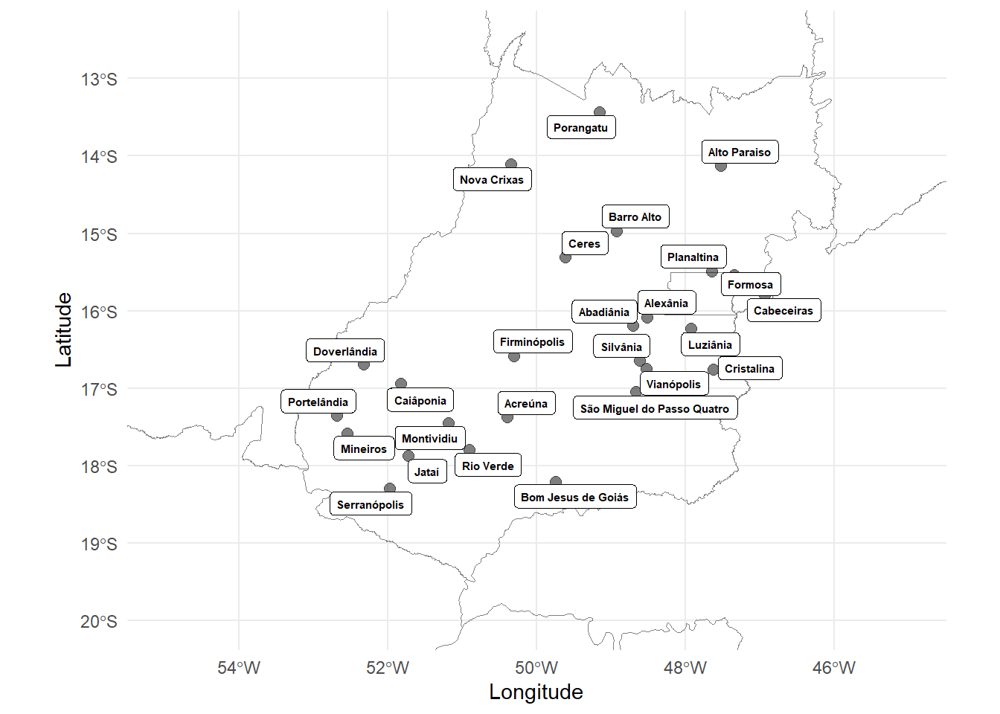
ggsave("fig/city.png", width = 6, height = 6, dpi = 600, bg = "white")By groups
library(ggplot2)
library(sf)
library(dplyr)
# Carregar shapefile no formato sf
brazil <- st_read("data/BRA_adm1.shp")Reading layer `BRA_adm1' from data source
`C:\Users\ricar\OneDrive\Documentos\GitHub\paper-PPN-characterization\data\BRA_adm1.shp'
using driver `ESRI Shapefile'
Simple feature collection with 27 features and 16 fields
Geometry type: MULTIPOLYGON
Dimension: XY
Bounding box: xmin: -73.98971 ymin: -33.74708 xmax: -28.84694 ymax: 5.264878
Geodetic CRS: WGS 84# Verificar se `all_genus_map` já está em sf
if ("sf" %in% class(all_genus_map)) {
all_genus_map <- all_genus_map %>%
mutate(long = st_coordinates(.)[,1], lat = st_coordinates(.)[,2]) %>%
st_drop_geometry() # Remove a geometria para evitar conflitos
}
goias <- brazil %>% filter(NAME_1 == "Goiás")
# Plot com ggplot2
ggplot() +
# Plot do mapa do Brasil
geom_sf(data = brazil,fill = NA,color = "grey50") +
geom_sf(data = goias, fill = NA, color = "black", size = 2) +
# Plot dos pontos (dados de nematoides)
geom_jitter(
data = all_genus_map,
aes(x = long, y = lat, size = quantity),color = "#041e39"
) +
# Ajuste da projeção
coord_sf(xlim = c(-55, -45), ylim = c(-20, -12.5)) +
# Ajuste de temas e rótulos
ggthemes::theme_few()+
theme(legend.position = "top", panel.spacing = unit(1, "lines"),
strip.text = element_text(face = "italic", size = 12),
axis.title = element_text(size = 12, face = "bold"),
legend.title = element_text(size = 12, face = "bold")) +
labs(x = "Longitude", y = "Latitude") +
scale_size_continuous(name = "Mean density") +
# Facet para dividir por gênero de nematoide
facet_wrap(~genus)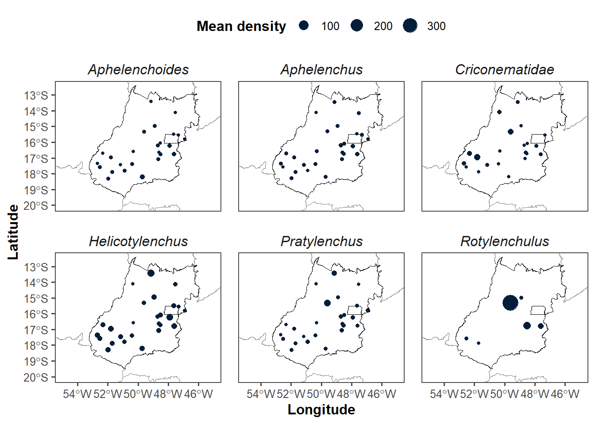
ggsave("fig/groups_goias.png", width = 8, height = 6, dpi = 600, bg = "white")By tillage
tillage_map = population %>%
group_by(city,tillage) %>%
summarise(
n = n()
)tillage_map[tillage_map$city== "Abadiânia",c("lat")] <- -16.1941
tillage_map[tillage_map$city== "Abadiânia",c("long")] <- -48.7001
tillage_map[tillage_map$city== "Acreúna",c("lat")] <- -17.3788
tillage_map[tillage_map$city== "Acreúna",c("long")] <- -50.3885
tillage_map[tillage_map$city== "Alexânia",c("lat")] <- -16.0783
tillage_map[tillage_map$city== "Alexânia",c("long")] <- -48.5097
tillage_map[tillage_map$city== "Alto Paraiso",c("lat")] <- -14.1336
tillage_map[tillage_map$city== "Alto Paraiso",c("long")] <- -47.5215
tillage_map[tillage_map$city== "Barro Alto",c("lat")] <- -14.9684
tillage_map[tillage_map$city== "Barro Alto",c("long")] <- -48.9201
tillage_map[tillage_map$city== "Bom Jesus de Goiás",c("lat")] <- -18.203
tillage_map[tillage_map$city== "Bom Jesus de Goiás",c("long")] <- -49.7341
tillage_map[tillage_map$city== "Cabeceiras",c("lat")] <- -15.7961
tillage_map[tillage_map$city== "Cabeceiras",c("long")] <- -46.927
tillage_map[tillage_map$city== "Caiâponia",c("lat")] <- -16.9539
tillage_map[tillage_map$city== "Caiâponia",c("long")] <- -51.8159
tillage_map[tillage_map$city== "Ceres",c("lat")] <- -15.3136
tillage_map[tillage_map$city== "Ceres",c("long")] <- -49.6033
tillage_map[tillage_map$city== "Cristalina",c("lat")] <- -16.7679
tillage_map[tillage_map$city== "Cristalina",c("long")] <- -47.6131
tillage_map[tillage_map$city== "Doverlândia",c("lat")] <- -16.6987
tillage_map[tillage_map$city== "Doverlândia",c("long")] <- -52.3189
tillage_map[tillage_map$city== "Firminópolis",c("lat")] <- -16.5825
tillage_map[tillage_map$city== "Firminópolis",c("long")] <- -50.3024
tillage_map[tillage_map$city== "Formosa",c("lat")] <- -15.537
tillage_map[tillage_map$city== "Formosa",c("long")] <- -47.3357
tillage_map[tillage_map$city== "Jataí",c("lat")] <- -17.8759
tillage_map[tillage_map$city== "Jataí",c("long")] <- -51.7214
tillage_map[tillage_map$city== "Luziânia",c("lat")] <- -16.2345
tillage_map[tillage_map$city== "Luziânia",c("long")] <- -47.9167
tillage_map[tillage_map$city== "Mineiros",c("lat")] <- -17.5787
tillage_map[tillage_map$city== "Mineiros",c("long")] <- -52.5424
tillage_map[tillage_map$city== "Montividiu",c("lat")] <- -17.4446
tillage_map[tillage_map$city== "Montividiu",c("long")] <- -51.1737
tillage_map[tillage_map$city== "Nova Crixas",c("lat")] <- -14.1048
tillage_map[tillage_map$city== "Nova Crixas",c("long")] <- -50.3397
tillage_map[tillage_map$city== "Planaltina",c("lat")] <- -15.4839
tillage_map[tillage_map$city== "Planaltina",c("long")] <- -47.6393
tillage_map[tillage_map$city== "Porangatu",c("lat")] <- -13.4312
tillage_map[tillage_map$city== "Porangatu",c("long")] <- -49.1428
tillage_map[tillage_map$city== "Portelândia",c("lat")] <- -17.3575
tillage_map[tillage_map$city== "Portelândia",c("long")] <- -52.6744
tillage_map[tillage_map$city== "Rio Verde",c("lat")] <- -17.7972
tillage_map[tillage_map$city== "Rio Verde",c("long")] <- -50.90
tillage_map[tillage_map$city== "São Miguel do Passo Quatro",c("lat")] <- -17.057
tillage_map[tillage_map$city== "São Miguel do Passo Quatro",c("long")] <- -48.6573
tillage_map[tillage_map$city== "Serranópolis",c("lat")] <- -18.2938
tillage_map[tillage_map$city== "Serranópolis",c("long")] <- -51.9695
tillage_map[tillage_map$city== "Silvânia",c("lat")] <- -16.643
tillage_map[tillage_map$city== "Silvânia",c("long")] <- -48.6041
tillage_map[tillage_map$city== "Vianópolis",c("lat")] <- -16.7434
tillage_map[tillage_map$city== "Vianópolis",c("long")] <- -48.5144
write_xlsx(tillage_map, "data/tillage_map.xlsx")library(ggplot2)
library(sf)
library(dplyr)
# Carregar shapefile do Brasil no formato sf
brazil <- st_read("data/BRA_adm1.shp")Reading layer `BRA_adm1' from data source
`C:\Users\ricar\OneDrive\Documentos\GitHub\paper-PPN-characterization\data\BRA_adm1.shp'
using driver `ESRI Shapefile'
Simple feature collection with 27 features and 16 fields
Geometry type: MULTIPOLYGON
Dimension: XY
Bounding box: xmin: -73.98971 ymin: -33.74708 xmax: -28.84694 ymax: 5.264878
Geodetic CRS: WGS 84# Verificar se `tillage_map` já está em sf e extrair coordenadas
if ("sf" %in% class(tillage_map)) {
tillage_map <- tillage_map %>%
mutate(long = st_coordinates(.)[,1], lat = st_coordinates(.)[,2]) %>%
st_drop_geometry() # Remove a geometria para evitar conflitos com ggplot2
}
# Criar o gráfico corrigido
tillage <- ggplot() +
# Plot do shapefile do Brasil
geom_sf(data = brazil, fill = NA, color = "grey50") +
# Plot dos pontos com coloração baseada em "tillage"
geom_jitter(
data = tillage_map,
aes(x = long, y = lat, color = tillage),
alpha = 1/2, size = 2
) +
# Ajuste da projeção e escala
coord_sf(xlim = c(-55, -45), ylim = c(-20, -12.5)) +
# Ajuste de temas e rótulos
theme_minimal() +
theme(legend.position = "right", panel.spacing = unit(1, "lines")) +
labs(x = "", y = "Latitude", color = "Tillage") +
scale_size_continuous(name = "Mean density / 100 cm³")
# Exibir o gráfico
tillage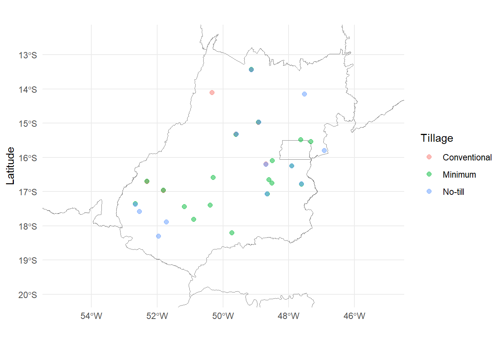
By soil
soil_map = population %>%
group_by(city,soil) %>%
summarise(
n = n()
)
soil_mapsoil_map[soil_map$soil== "Latossolo",c("soil_goias")] <- "Latosol"
soil_map[soil_map$soil== "Chernossolo",c("soil_goias")] <- "Chernosol"
soil_map[soil_map$soil== "Cambissolo",c("soil_goias")] <- "Cambisol"
soil_map[soil_map$soil== "Gleissolo",c("soil_goias")] <- "Gleisol"
soil_map[soil_map$soil== "Argissolo",c("soil_goias")] <- "Argisol"
soil_map[soil_map$soil== "Neossolo",c("soil_goias")] <- "Neosol"soil_map[soil_map$city== "Abadiânia",c("lat")] <- -16.1941
soil_map[soil_map$city== "Abadiânia",c("long")] <- -48.7001
soil_map[soil_map$city== "Acreúna",c("lat")] <- -17.3788
soil_map[soil_map$city== "Acreúna",c("long")] <- -50.3885
soil_map[soil_map$city== "Alexânia",c("lat")] <- -16.0783
soil_map[soil_map$city== "Alexânia",c("long")] <- -48.5097
soil_map[soil_map$city== "Alto Paraiso",c("lat")] <- -14.1336
soil_map[soil_map$city== "Alto Paraiso",c("long")] <- -47.5215
soil_map[soil_map$city== "Barro Alto",c("lat")] <- -14.9684
soil_map[soil_map$city== "Barro Alto",c("long")] <- -48.9201
soil_map[soil_map$city== "Bom Jesus de Goiás",c("lat")] <- -18.203
soil_map[soil_map$city== "Bom Jesus de Goiás",c("long")] <- -49.7341
soil_map[soil_map$city== "Cabeceiras",c("lat")] <- -15.7961
soil_map[soil_map$city== "Cabeceiras",c("long")] <- -46.927
soil_map[soil_map$city== "Caiâponia",c("lat")] <- -16.9539
soil_map[soil_map$city== "Caiâponia",c("long")] <- -51.8159
soil_map[soil_map$city== "Ceres",c("lat")] <- -15.3136
soil_map[soil_map$city== "Ceres",c("long")] <- -49.6033
soil_map[soil_map$city== "Cristalina",c("lat")] <- -16.7679
soil_map[soil_map$city== "Cristalina",c("long")] <- -47.6131
soil_map[soil_map$city== "Doverlândia",c("lat")] <- -16.6987
soil_map[soil_map$city== "Doverlândia",c("long")] <- -52.3189
soil_map[soil_map$city== "Firminópolis",c("lat")] <- -16.5825
soil_map[soil_map$city== "Firminópolis",c("long")] <- -50.3024
soil_map[soil_map$city== "Formosa",c("lat")] <- -15.537
soil_map[soil_map$city== "Formosa",c("long")] <- -47.3357
soil_map[soil_map$city== "Jataí",c("lat")] <- -17.8759
soil_map[soil_map$city== "Jataí",c("long")] <- -51.7214
soil_map[soil_map$city== "Luziânia",c("lat")] <- -16.2345
soil_map[soil_map$city== "Luziânia",c("long")] <- -47.9167
soil_map[soil_map$city== "Mineiros",c("lat")] <- -17.5787
soil_map[soil_map$city== "Mineiros",c("long")] <- -52.5424
soil_map[soil_map$city== "Montividiu",c("lat")] <- -17.4446
soil_map[soil_map$city== "Montividiu",c("long")] <- -51.1737
soil_map[soil_map$city== "Nova Crixas",c("lat")] <- -14.1048
soil_map[soil_map$city== "Nova Crixas",c("long")] <- -50.3397
soil_map[soil_map$city== "Planaltina",c("lat")] <- -15.4839
soil_map[soil_map$city== "Planaltina",c("long")] <- -47.6393
soil_map[soil_map$city== "Porangatu",c("lat")] <- -13.4312
soil_map[soil_map$city== "Porangatu",c("long")] <- -49.1428
soil_map[soil_map$city== "Portelândia",c("lat")] <- -17.3575
soil_map[soil_map$city== "Portelândia",c("long")] <- -52.6744
soil_map[soil_map$city== "Rio Verde",c("lat")] <- -17.7972
soil_map[soil_map$city== "Rio Verde",c("long")] <- -50.90
soil_map[soil_map$city== "São Miguel do Passo Quatro",c("lat")] <- -17.057
soil_map[soil_map$city== "São Miguel do Passo Quatro",c("long")] <- -48.6573
soil_map[soil_map$city== "Serranópolis",c("lat")] <- -18.2938
soil_map[soil_map$city== "Serranópolis",c("long")] <- -51.9695
soil_map[soil_map$city== "Silvânia",c("lat")] <- -16.643
soil_map[soil_map$city== "Silvânia",c("long")] <- -48.6041
soil_map[soil_map$city== "Vianópolis",c("lat")] <- -16.7434
soil_map[soil_map$city== "Vianópolis",c("long")] <- -48.5144
write_xlsx(soil_map,"data/soil_map.xlsx")library(ggplot2)
library(sf)
library(dplyr)
# Carregar shapefile do Brasil no formato sf
brazil <- st_read("data/BRA_adm1.shp")Reading layer `BRA_adm1' from data source
`C:\Users\ricar\OneDrive\Documentos\GitHub\paper-PPN-characterization\data\BRA_adm1.shp'
using driver `ESRI Shapefile'
Simple feature collection with 27 features and 16 fields
Geometry type: MULTIPOLYGON
Dimension: XY
Bounding box: xmin: -73.98971 ymin: -33.74708 xmax: -28.84694 ymax: 5.264878
Geodetic CRS: WGS 84# Verificar se `soil_map` já está em sf e extrair coordenadas
if ("sf" %in% class(soil_map)) {
soil_map <- soil_map %>%
mutate(long = st_coordinates(.)[,1], lat = st_coordinates(.)[,2]) %>%
st_drop_geometry() # Remove a geometria para evitar conflitos com ggplot2
}
# Criar o gráfico corrigido
soil <- ggplot() +
# Plot do shapefile do Brasil
geom_sf(data = brazil, fill = NA, color = "grey50") +
# Plot dos pontos com coloração baseada no tipo de solo
geom_jitter(
data = soil_map,
aes(x = long, y = lat, color = soil_goias),
alpha = 1/2, size = 2
) +
# Ajuste da projeção e escala
coord_sf(xlim = c(-55, -45), ylim = c(-20, -12.5)) +
# Ajuste de temas e rótulos
theme_minimal() +
theme(legend.position = "right", panel.spacing = unit(1, "lines")) +
labs(x = "Longitude", y = "Latitude", color = "Soil type") +
scale_size_continuous(name = "Mean abundance / 100 cm³")
# Exibir o gráfico
soil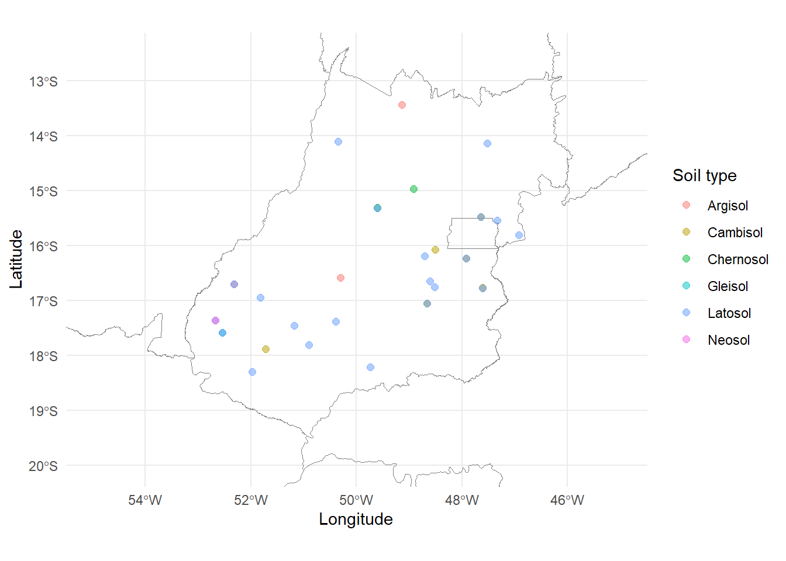
plot_grid(tillage,soil, ncol = 1, label_size = 12,
labels = c("(a)", "(b)"))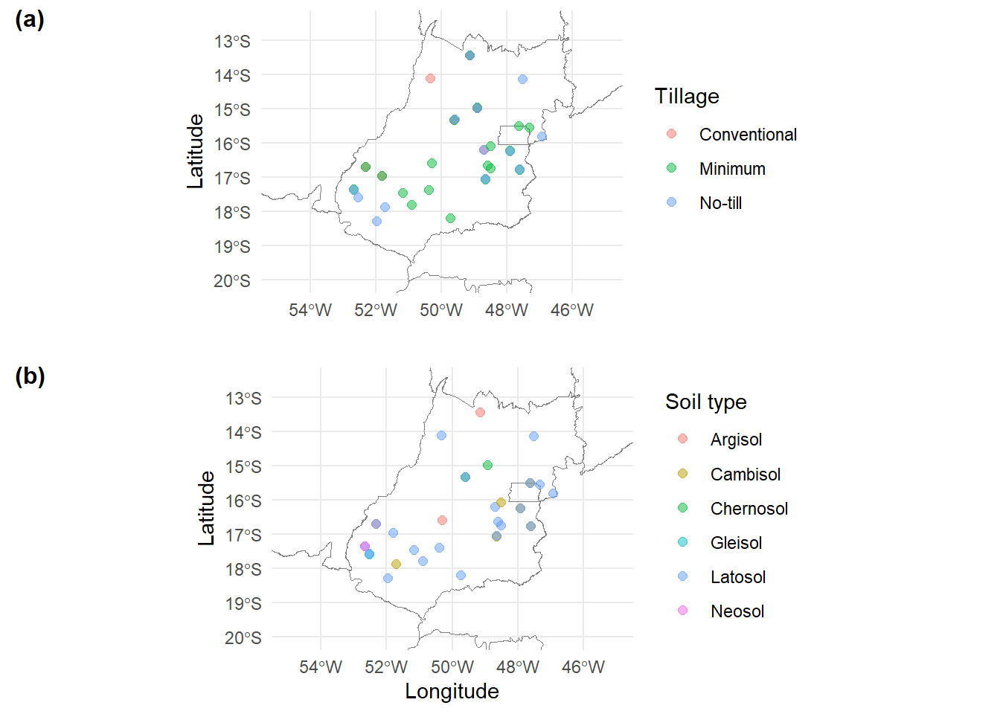
ggsave("fig/practice_mixed.png", width = 5, height = 6, dpi = 600, bg = "white")